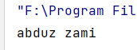

স্ট্রিং
স্ট্রিং হচ্ছে ক্যারেক্টার এর অ্যারে। আমরা char আর Character এ মাত্র একটি অক্ষর রাখতে পারতাম। এখন যদি দরকার হয় একটি শব্দকে রাখার অথবা একটি বাক্যকে অথবা একটি প্যারাগ্রাফকে, তখন কি করবো? এর সমাধান হচ্ছে স্ট্রিং।
স্ট্রিং কে double quotation (“ “) এর ভিতরে রাখতে হয়। স্ট্রিং এর ডিক্লারেশন দেখি। স্ট্রিং যেহেতু রেফারেন্স টাইপ ডাটা টাইপ সেহেতু এটিকে এভাবে ডিক্লেয়ার করার কথা।
String str = new String("Abduz Zami");
System.out.println(str);
এভাবে না করে আমরা আরও সহজে স্ট্রিং ডিক্লেয়ার করতে পারি। এটা প্রিমিটিভ টাইপের ডিক্লারেশনের মত।
String str = "Abduz Zami";
System.out.println(str);
ইউজার এর কাছে থেকে স্ট্রিং ইনপুট নেওয়া দেখি এখন।
String str;
Scanner scanner = new Scanner(System.in);
str = scanner.next();
next() মেথডটি স্পেস পাওয়ার আগ পর্যন্ত রিড করে।
আরও একটি মেথড আছে স্ট্রিং স্ক্যান করার।
String str1;
str1 = scanner.nextLine();
System.out.println(str1);
nextLine() মেথডটি নতুন লাইন পাওয়ার আগ পর্যন্ত স্ক্যান করে।
next() এবং nextLine() নিয়ে ইতঃপূর্বে বিস্তারিত আলোচনা করা হয়েছে। “ইউজার থেকে ইনপুট নেওয়া” অধ্যায়ে।
আমরা স্ট্রিং এর ডিক্লেয়ারেশন এবং ইউজার ইনপুট নেওয়া শিখলাম। এখন স্ট্রিং সম্পর্কে একটি গুরুত্বপূর্ণ কথা বলব। সেটি হল স্ট্রিং কে বলা হয় ইম্মিউটএবল (Immutable) ডাটা টাইপ। এর কারণটি হল এই যে, স্ট্রিং ভেরিএবল একবার ইনিশিয়ালাইজ করলে পরবর্তীতে আর তার কোন পরিবর্তন করা যায় না। বিষয়টা কোডের মাধ্যমে দেখাই।
test1.java
|
import java.util.Scanner; |
এই কোডে concat নামে একটি ফাংশন ব্যাবহার করা হয়েছে। এর কাজ হল একটি স্ট্রিং এর সাথে অন্য একটি স্ট্রিং কে সংযুক্ত করা। তো আউটপুটে আসার কথা ছিল Abduz ZamiAbdusSami। কিন্তু আউটপুটে এসেছে এটি।
আরেকটি উদাহরণ দেখি।
Test1.java
|
import java.util.Scanner; |
এখানে toLowerCase() মেথডটি ব্যাবহার করা হয়েছে যার কাজ স্ট্রিং এর সব character কে ছোট হাতের করে দেওয়া। এটার আউটপুট দেখলেও দেখব যে মুল স্ট্রিং এর কোন পরিবর্তন হয়নি।
Immutable স্ট্রিং এর এই সমস্যার সমাধান কয়েকভাবে করা যায়। তার মধ্যে একটি হল বিকল্প ডাটা টাইপ এর ব্যাবহার - StringBuilder আর StringBuffer। এগুলো আমরা পরবর্তীতে শিখব। অন্য উপায়টি হল স্ট্রিংটিতে কোন পরিবর্তন আনার লাইনেই ওই স্ট্রিং এ অ্যাসাইন করে দেওয়া। কোডের মাধ্যমে দেখি।
test1.java
|
import java.util.Scanner; |
এর আউটপুট আসবে এটা।

এবার ঠিকঠাক আউটপুট এসেছে।
শুরুতে বলেছিলাম স্ট্রিং হচ্ছে character এর array। কিন্তু স্ট্রিং এ array এর মত ইনডেক্স ওয়াইজ value পরিবর্তন করা যায়না। তবে যেকোনো ইনডেক্স এর character টি পাওয়া যায়। অর্থাৎ read করতে কোন সমস্যা নেই। যত জটিলতা সব write করতে। আমাদের ইনডেক্স ওয়াইজ কাজ হরহামেশাই করতে হয় সেজন্য একটি কাজ করা যায়। সেটি হল স্ট্রিং কে শুরুতেই char এর array তে নিয়ে নেওয়া। কাজটি আমরা এভাবে করতে পারি।
test1.java
|
import java.util.Scanner; |
এর আউটপুটটি নিম্নরূপ।
এখানে আমরা বিভিন্ন index এর value দেখতে পারছি এবং তা পরিবর্তন ও করতে পারছি। যেমন ০ এবং ১ নম্বর ইনডেক্স এ যথাক্রমে A , b ছিল যাকে পরিবর্তন করে আমরা X ও Y করেছি। Array নিয়ে আগের অধ্যায়ে বিস্তারিত আলোচনা করা হয়েছে।
স্ট্রিং এর বেশ কয়েকটি মেথড বা ফাংশন আছে যা প্রচুর ব্যবহার হয়। তার কয়েকটি নিচে দেওয়া হল।
Created with the Personal Edition of HelpNDoc: Effortlessly Edit and Export Markdown Documents